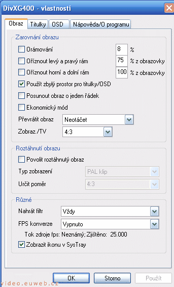
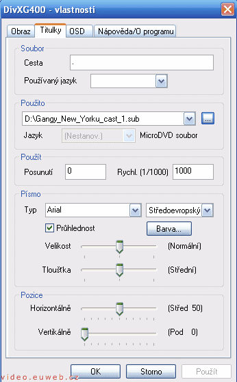
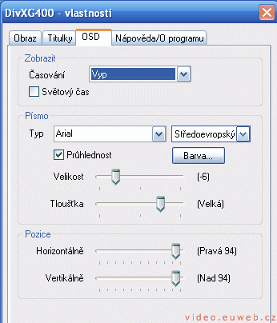

DivXG400
Možná jste si už někdy chtěli přehrát film v AVI v původním znění s externími českými titulky. Ale ouha, jak dostat titulky do videa?
- Používáte-li přehrávač, který umožňuje přidat titulky do videa jako svoji funkci, máte po problému. Využijete této funkce.
- Používáte-li přehrávač Windows Media Player, Zoom Player nebo nějaký jiný, který neumí titulky, musíte použít utilitku umožňující titulky do videa dostat. A jednou z nich je DivXG400!
Stáhnutí
DivXG400 je freeware a proto si ho můžete zdarma stáhnout. Můžete si stáhnout i češtinu. Nainstalujte si to, u češtiny máte návod jak na to.
DivXG400
Pokud jste nainstalovali správně (a divil bych se, kdyby ne), objeví se u hodin v SysTray ikonka . Pokud na ni dvakrát kliknete levým tlačítkem myši, uvidíte nastavení.
Záložka Obraz
Orámování - Udělá černý rám kolem videa podle vámi zvolených procent. Na procenta bacha, pokud zvolíte 10%, bude v levo 5%, dole 5%, vpravo 5% a nahoře 5%. Já bych čekal, že vlevo deset, vpravo deset, nahoře deset a dole deset. Vyžaduje to restart programu
U zbytku jsem nepřišel na to, co to dělá.
Převrátit obraz - To je asi jasné, kdyby ne, převrací to obraz
Zobraz./TV - Nepřišel na to, co to dělá.
Typ zobrazení - Musíte něco zvolit, já dávám PAL klip
Určit poměr - Určujete poměr videa, z filmu ve formátu 4:3 se dá udělat 16:9, obráceně ne. Z filmu v poměru 16:9 uděláte volbou 16:9 film 32:9 (jestli dobře uvažuju).
Nahrát filtr - Důležité nastavení! V nabídce jsou čtyři možnosti: Vždy - DivXG400 se nahraje vždy, když je třeba, Nikdy - nenahraje se nikdy. Bacha na to! Když to zvolíte, už to nedostanete zpět, Silou - kodek se spustí vždycky, Pouze v nutnosti - nevím, jaký to má význam.
FPS konverze - Převádí film na 25 snímků za sekundu. Dnes to skoro nemá význam, protože většina filmů 25 snímků za sekundu má.
Zobrazit ikonu v SysTray - Mějte vždy zaškrtlé! Zobrazuje ikonu u hodin Když to zrušíte, nevrátíte už zpět.
Záložka titulky
Cesta, Používaný jazyk - Nevím, co to dělá, tak jsem tam dal tečku. V nabídce jazyk není čeština, takže ignoruju.
Použito - Zde si vybíráte titulky. Pokud se jmenují stejně jako film, načtou se automaticky.
Jazyk - Nevím, ta nabídka není aktivní. Ale asi to píše, v jakém jazyce jsou titulky, pokud je to v nich napsané.
Písmo - To asi nemá cenu rozebírat. Nastavte si to, jak vám to vyhovuje.
Záložka OSD
OSD je časová informace zobrazující při přehrávání videa. V podstatě se to nepoužívá.
6>Jak na to - V Časování si vybíráte, jestli chcete vidět zbývajicí nebo uplynulý čas. Můžete si zvolit i normální čas. Písmo si nastavte, jak chcete.
O programu
Standardní info o autorovi.
Video na PC: Vytvořeno v roce 2005 a víc. Autorem je Jan 'Šlaha' Šlahora. Veškerá práva vyhrazena autorům článků. Pokud není uvedeno jinak, jsem to já.